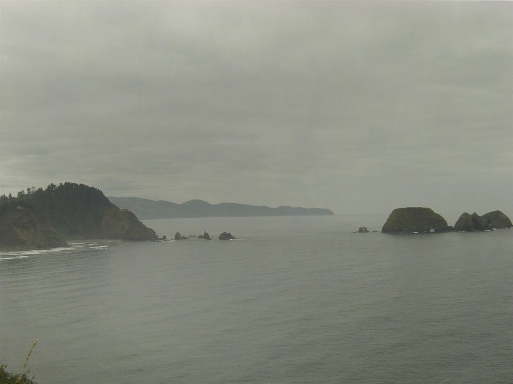
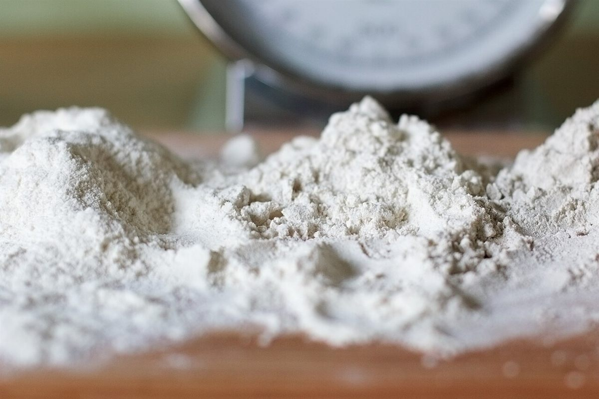
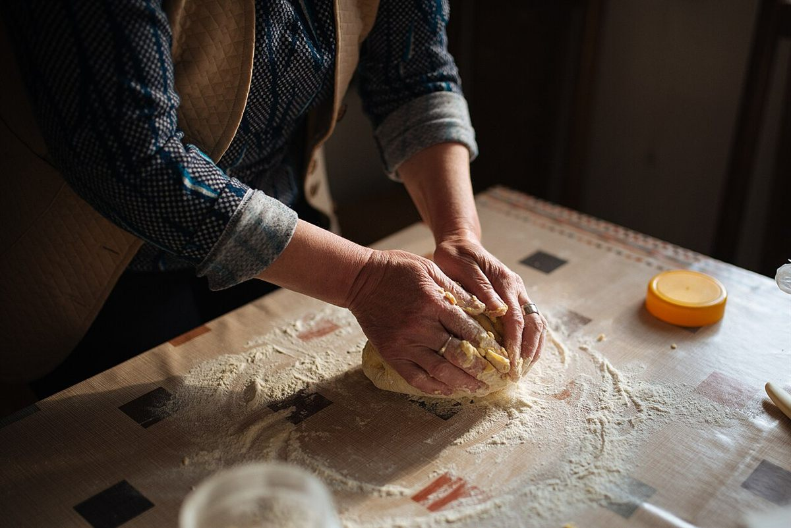
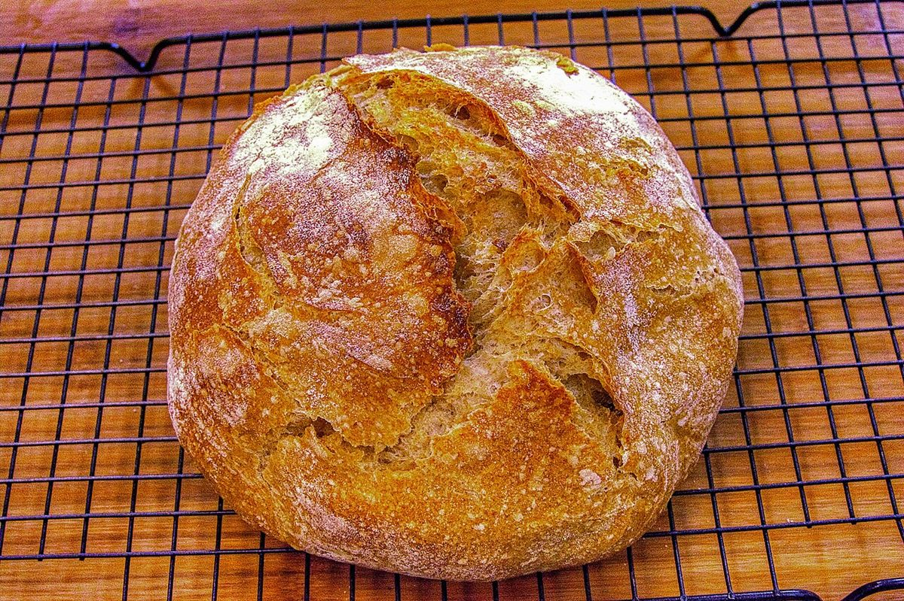
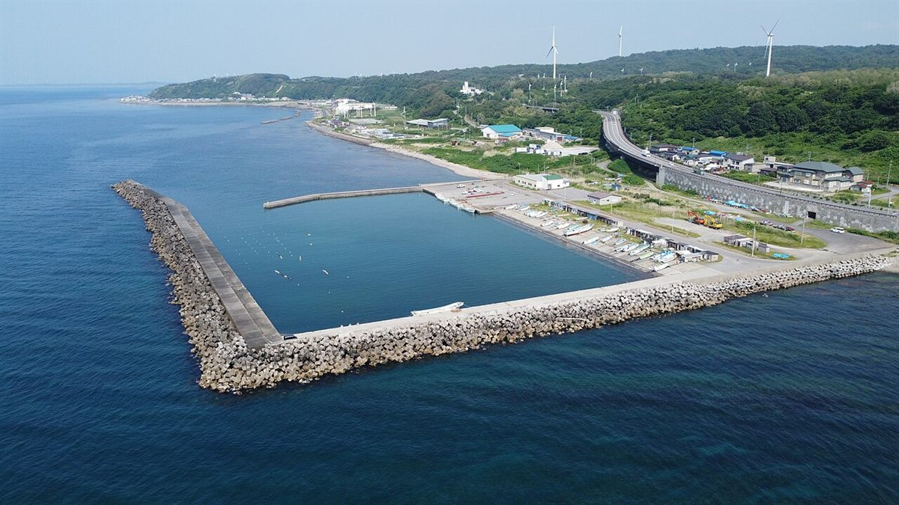
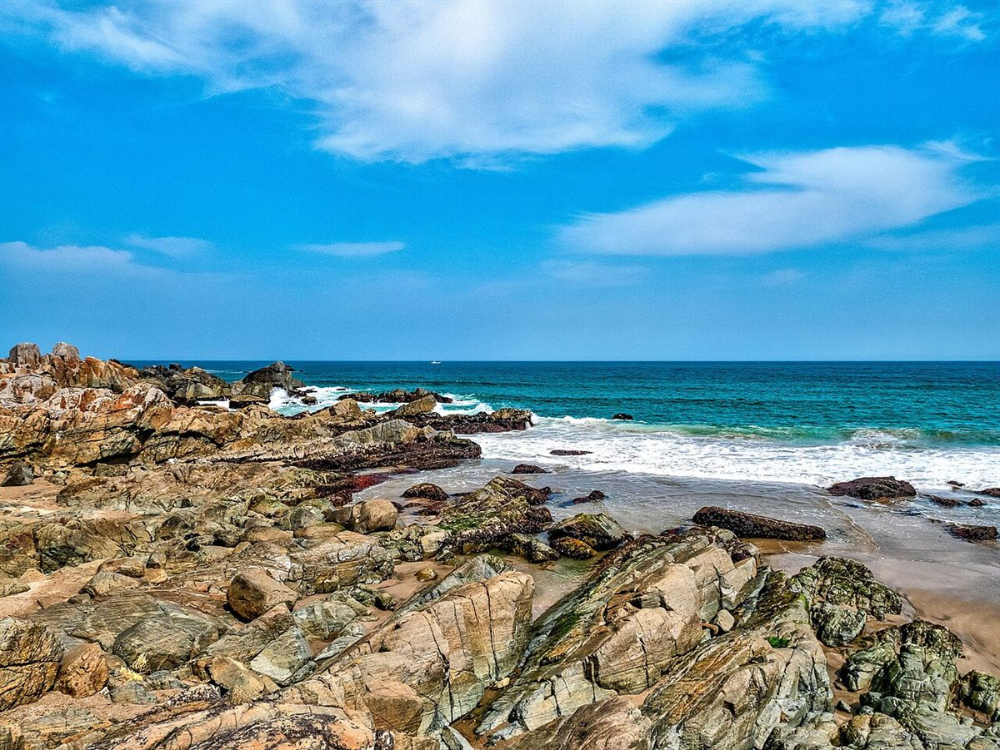

青森県八戸市新湊のベーカリー
輪の向こうに、
港の朝。
※このキャッチコピーは制作側の案です。お店の理念や由来を示すものではありません。
港に近い八戸市新湊の、ベーカリー。お店の情報は準備中です。まずはお電話かInstagramで、のぞいてみてください。

営業時間・メニュー・料金は準備中です。詳しくはお電話かInstagramでお問い合わせください。
港とパンのイメージ
写真はすべてイメージです。




